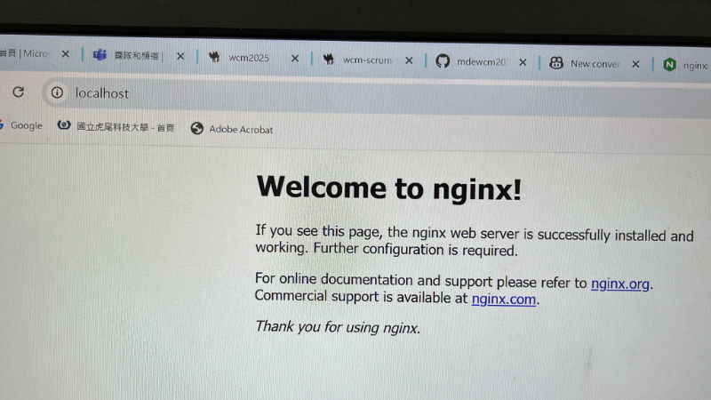

IPv6-1 <<
Previous Next >> Task
nginx
使用nginx的前置作業:
first
下載certbote然後解壓縮到C槽(因為之後用不到）
在C槽裡面會看到
programfiles➡️Certbot➡️pkgs➡️certbot➡️tests➡️testdata➡️sample_archive
➡️一個f開頭另一個p開頭的檔案
second
把這兩個檔案拉到nginx1.26.3中的「conf」裡面
把兩個檔案的1這個數字刪除
third
在nginx1.26.3的檔案中，
先將nginx.conf改名為nginx.conf_orig
forth
在老師作業網頁裡HW1
裡nginx.conf的連結點進去，複製全部程式，
貼到SciTE裡面，
再更改w99改成自己的編號，
最後另存(Save as)到conf.的檔案夾裡面且
命名為nginx.conf！
fifth
在老師作業網頁裡HW2裡，
有一句話基本設定檔案，然後右鍵➡️在新分頁開啟程式檔start_waitress.py，
複製程式到 SciTE（白色的）裡面，
再Save As到tmp裡面自己的近端的倉儲資料夾內就可以啦～
sixth
在命令列（黑色的）中打pip install waitress 按Eater
就會下載好了
seventh
檢查
ipv6
proxy
nginx有開啟(開啟方法如下）
[nginx的開啟方法：
1.點usb裡的nginx然後點兩下，會出現防火牆，點允許（nginx會關起來，沒事！）
2.在瀏覽器搜localhost 會出現⬇️

就開成功了]
eighth
到命令列（黑色的）打
cd tmp
cd 自己的近端倉儲檔案夾名稱
打上python start_waitress.py 然後按Eater
（註：不會跑任何東西）
IPv6-1 <<
Previous Next >> Task